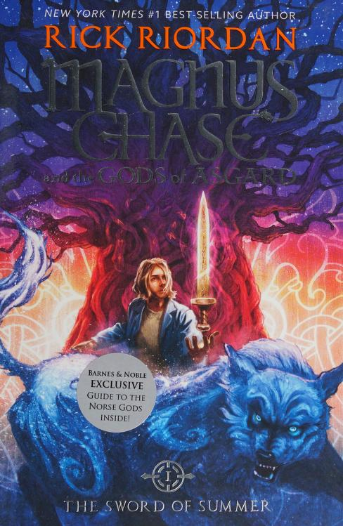

Book Information
Publish Date: January 1, 2023
Age Range: 6-10 years
Genre: Fiction
Other Readers Rating
★★★★☆Books
-
Septimus Heap Book One: Magyk

Author: Angie Sage
Summary: Magyk, the first book in Angie Sage’s Septimus Heap series, is a thrilling fantasy adventure filled with magic, mystery, and humor. Read More...
-
Magnus Chase Book one: Sword of Summer
Author: Rick Riordan
Summary: The Sword of Summer, the first book in Rick Riordan’s Magnus Chase and the Gods of Asgard series, delivers an action-packed and humorous adventure rooted in Norse mythology. Read More...
-
Leven Thumps Book One: The Gateway to Foo
Author: Obert Sky
Summary: Leven Thumps and the Gateway to Foo is a whimsical and imaginative fantasy novel that follows Leven Thumps, an ordinary boy who discovers he is destined to save the dream world of Foo from destruction. Read More...